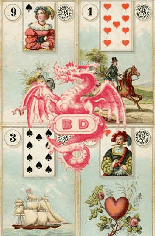

历史雷诺曼 · Dondorf，约 1890 年
Dondorf 雷诺曼
历史
奠基之作
彩色石印
1890 年
有复刻版
约 1890 年出版于法兰克福的这副牌，为此后一个世纪定下了雷诺曼传统的视觉规范。今天几乎每一副现代传统雷诺曼，都是 Dondorf 的后裔。

Dondorf Lenormand——也叫 Mlle Lenormand 1890——是一副处在源头位置的历史牌组，今天印行的传统雷诺曼几乎都从它流出。Dondorf 是一家位于法兰克福的德国印刷公司，约在 1890 年出版了这副影响极大的雷诺曼；那一版 36 张的彩色石印牌，定下了其他出版社此后一直沿用的视觉规范。
后世的复刻版——Blue Owl、Piatnik、Old Style——全都源自 Dondorf。只要你用过任何一副传统雷诺曼，你用的就是 Dondorf 的孙辈。
这是那个年代彩色石印的巅峰水准：细致的小幅场景、讲究的分色叠印、忠于年代的服饰，还有 19 世纪末德国印刷文化那种略带陈旧感的米白底色。36 个符号以石印风格呈现，此后一个世纪的雷诺曼图像语言就此定型。每张牌都带编号和扑克牌嵌图，多数版本还附有一段四行的德语诗句。
想看到 19 世纪末原貌、未经任何现代重新诠释的人。Dondorf 是雷诺曼视觉传统的历史实物，而复刻版（目前由多家欧洲出版社发行，包括 Lo Scarabeo 和 AGM-Urania 旗下的不同品牌）把这件实物重新带回市面，可以真正拿来用。
如果你在认真研读雷诺曼，非常推荐——书上描述的就是这副牌。
标准的 36 张，古典编号与扑克牌对应，与 1890 年代传统定型时完全一致。
有几家出版社都在做 Dondorf 复刻，质量参差。Lo Scarabeo 的复刻版是当下比较受欢迎的选择；AGM-Urania 也出版相关版本。1890 年的 Dondorf 原版属于收藏品，在古董占卜牌市场上要价不菲。